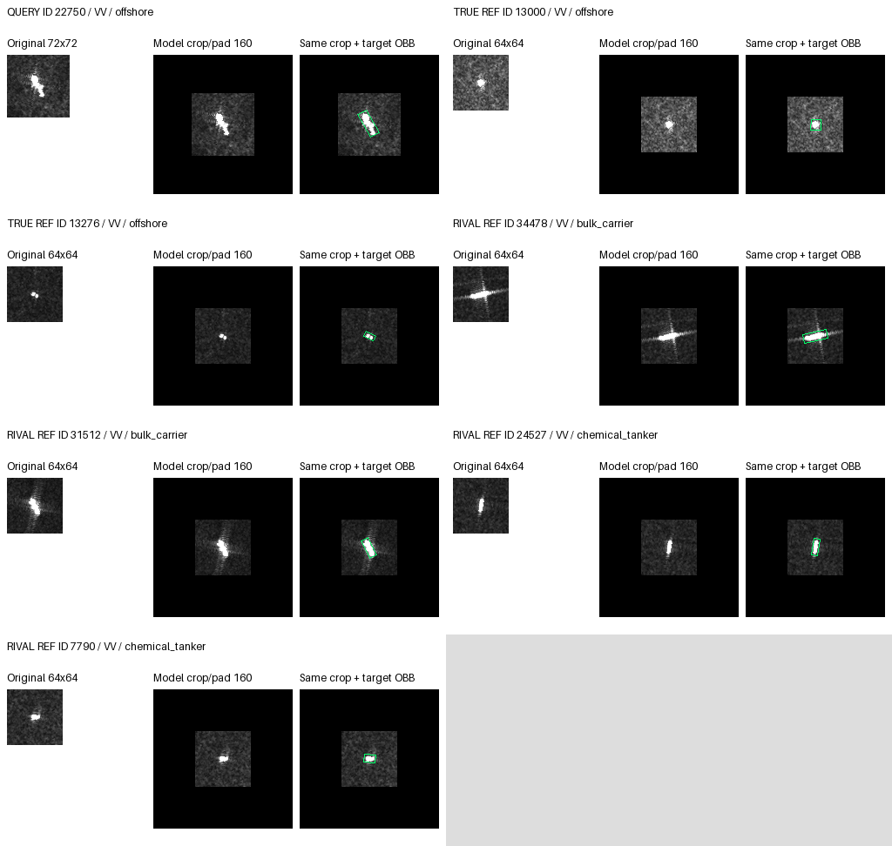

8. WW / 22750 / seed 43 / both
Truth: offshore; port: Jebel Ali; pass: S1A_061313_07A641
| Seed | legacy_before | legacy_after | spatial_before | spatial_after |
|---|---|---|---|---|
| 17 | bulk_carrier | chemical_tanker | bulk_carrier | chemical_tanker |
| 29 | chemical_tanker | chemical_tanker | chemical_tanker | chemical_tanker |
| 43 | bulk_carrier | chemical_tanker | bulk_carrier | chemical_tanker |
Logits, fixed rivals and reference IDs
{
"eligible_reference_ids": [
"34478",
"31512",
"14814",
"16401",
"6913",
"22755",
"24527",
"7790",
"36308",
"23719",
"29922",
"2077",
"12041",
"7429",
"13000",
"13276"
],
"true_reference_ids": [
"13000",
"13276"
],
"rival_reference_ids": [
"34478",
"31512",
"24527",
"7790"
],
"per_seed": [
{
"seed": 17,
"conditions": {
"legacy_before": {
"logits": [
-3.4856982231140137,
-19.72123146057129,
-12.581860542297363,
-5.293356895446777,
-8.790607452392578,
-6.513740062713623,
-14.824214935302734,
-20.720827102661133
],
"prediction": 0,
"truth_rival_margins": {
"0": -17.23512887954712,
"3": -15.427470207214355
}
},
"legacy_after": {
"logits": [
-3.3603789806365967,
-16.38079833984375,
-10.457393646240234,
-3.1911368370056152,
-8.2655611038208,
-3.71863055229187,
-10.872835159301758,
-16.038789749145508
],
"prediction": 3,
"truth_rival_margins": {
"0": -12.678410768508911,
"3": -12.847652912139893
}
},
"spatial_before": {
"logits": [
-3.627638816833496,
-19.61744499206543,
-12.610475540161133,
-5.419618606567383,
-8.778497695922852,
-6.273624897003174,
-14.636735916137695,
-20.64057159423828
],
"prediction": 0,
"truth_rival_margins": {
"0": -17.012932777404785,
"3": -15.220952987670898
}
},
"spatial_after": {
"logits": [
-3.525273084640503,
-16.503131866455078,
-10.478614807128906,
-3.389509916305542,
-8.206005096435547,
-3.557551860809326,
-10.806135177612305,
-16.118972778320312
],
"prediction": 3,
"truth_rival_margins": {
"0": -12.59369969367981,
"3": -12.72946286201477
}
}
}
},
{
"seed": 29,
"conditions": {
"legacy_before": {
"logits": [
-4.526166915893555,
-18.083023071289062,
-11.799423217773438,
-4.176267147064209,
-6.939420223236084,
-6.14627742767334,
-16.118371963500977,
-20.159854888916016
],
"prediction": 3,
"truth_rival_margins": {
"0": -15.633687973022461,
"3": -15.983587741851807
}
},
"legacy_after": {
"logits": [
-4.038623809814453,
-15.030966758728027,
-9.671456336975098,
-2.678784132003784,
-6.187315464019775,
-4.409270286560059,
-11.777435302734375,
-15.20190143585205
],
"prediction": 3,
"truth_rival_margins": {
"0": -11.163277626037598,
"3": -12.523117303848267
}
},
"spatial_before": {
"logits": [
-4.4142746925354,
-18.014850616455078,
-11.860261917114258,
-4.212831020355225,
-7.129591464996338,
-5.971929550170898,
-16.365196228027344,
-20.417219161987305
],
"prediction": 3,
"truth_rival_margins": {
"0": -16.002944469451904,
"3": -16.20438814163208
}
},
"spatial_after": {
"logits": [
-4.112349033355713,
-14.827202796936035,
-9.644590377807617,
-2.5107240676879883,
-6.257556438446045,
-4.139353275299072,
-11.767777442932129,
-15.37025260925293
],
"prediction": 3,
"truth_rival_margins": {
"0": -11.257903575897217,
"3": -12.859528541564941
}
}
}
},
{
"seed": 43,
"conditions": {
"legacy_before": {
"logits": [
-2.665351390838623,
-21.52412986755371,
-10.603046417236328,
-3.5819878578186035,
-7.659191608428955,
-6.819468021392822,
-15.635452270507812,
-16.633737564086914
],
"prediction": 0,
"truth_rival_margins": {
"0": -13.968386173248291,
"3": -13.05174970626831
}
},
"legacy_after": {
"logits": [
-3.0268478393554688,
-20.02126693725586,
-10.523534774780273,
-2.1910221576690674,
-7.0187087059021,
-5.004802703857422,
-12.913908004760742,
-13.997024536132812
],
"prediction": 3,
"truth_rival_margins": {
"0": -10.970176696777344,
"3": -11.806002378463745
}
},
"spatial_before": {
"logits": [
-2.8255279064178467,
-21.516035079956055,
-10.465283393859863,
-3.6000730991363525,
-7.646032333374023,
-6.867198467254639,
-15.725214958190918,
-16.642789840698242
],
"prediction": 0,
"truth_rival_margins": {
"0": -13.817261934280396,
"3": -13.04271674156189
}
},
"spatial_after": {
"logits": [
-3.2218246459960938,
-19.92237663269043,
-10.368046760559082,
-2.0761983394622803,
-6.949152946472168,
-4.755660533905029,
-12.783842086791992,
-13.507670402526855
],
"prediction": 3,
"truth_rival_margins": {
"0": -10.285845756530762,
"3": -11.431472063064575
}
}
}
}
]
}VV

VH